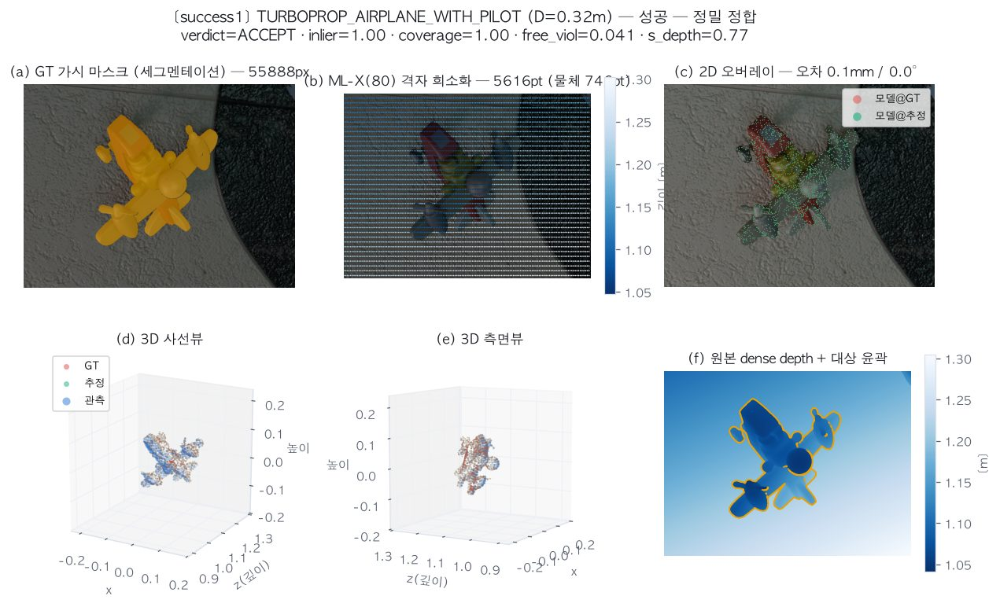
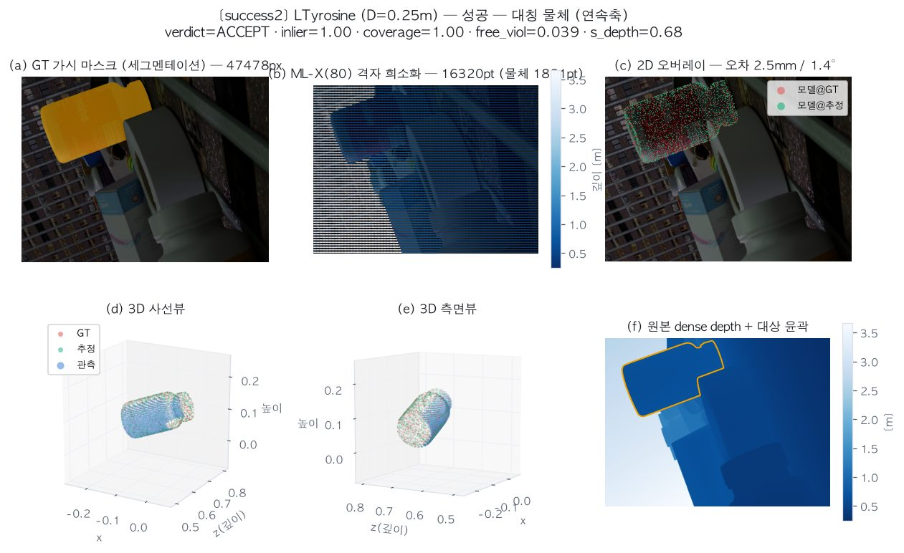
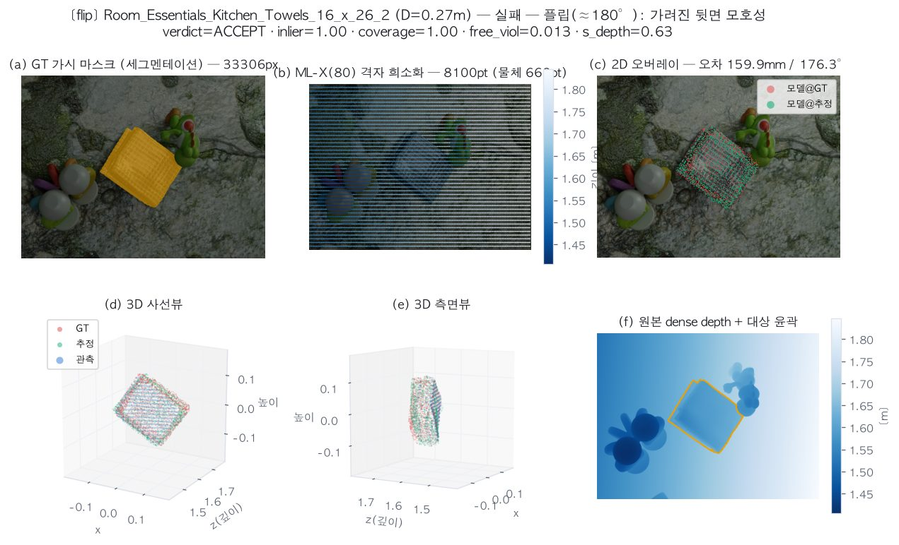
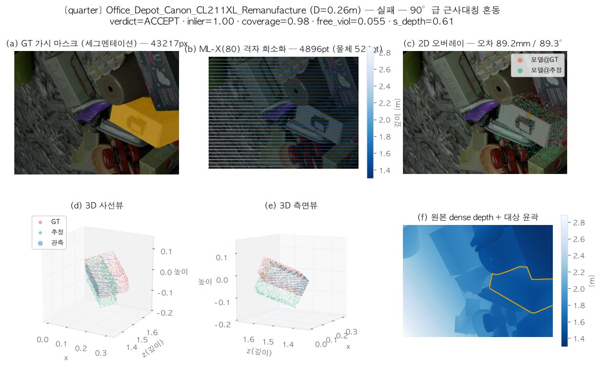
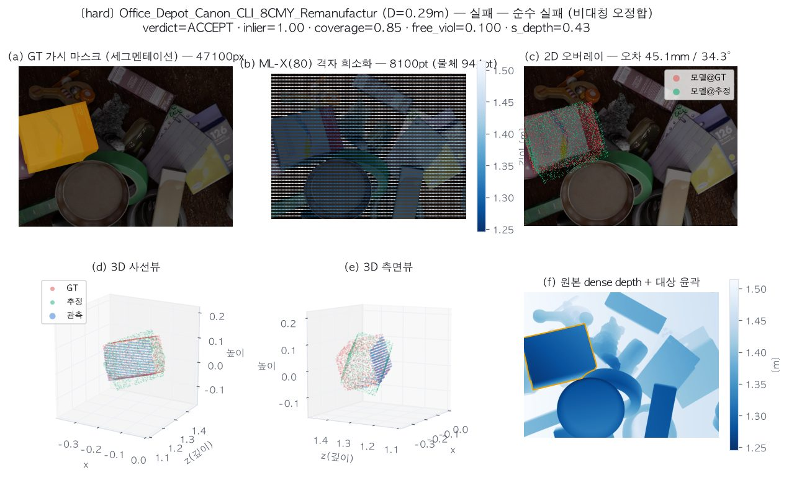
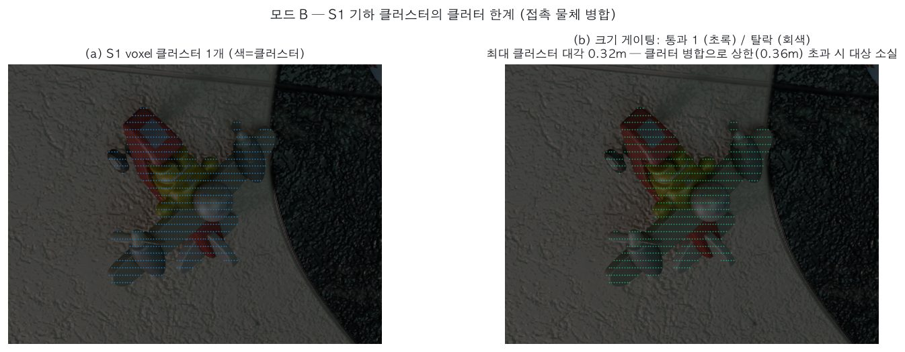
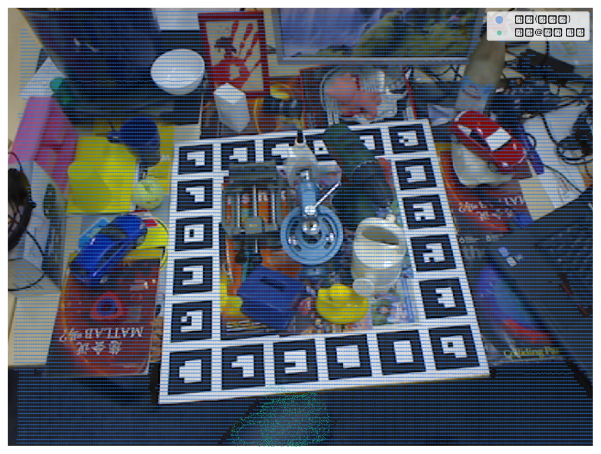
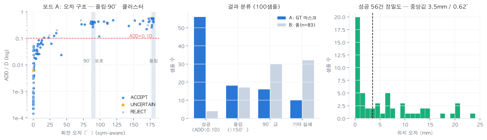

v1.0 · 2026-07-18 · 대상: v0-geo(무학습) · MegaPose-GSO 샤드 100샘플(가시성>0.75), 임의 자세, dense depth→ML-X(80) 격자 희소화(σ 8mm 가정), 직립 프리이어 OFF ·
케이스 패널은 각각 세그멘테이션·희소화·2D 오버레이·3D 2뷰·depth맵을 포함 ·
수치 정본: eval/external_test/README.md · 합성 검증(팔레트)은 04 보고서
56%모드 A(GT 마스크) ADD<0.1D — 성공 시 3.5mm/0.62°
90%근사대칭 등가(플립·90°)까지 허용한 리콜
오수락 40%검증기 도메인 이전 실패 — 가려진 뒷면에서 플립 분리 불가
5%모드 B(풀) — S1 기하 클러스터의 클러터 한계 실증
1읽는 법 — 케이스 패널의 6분면
분면
내용
확인 포인트
(a) 세그멘테이션
GT 가시 마스크(주황) — 모드 A의 입력 (S1 우회)
가림·절단 정도
(b) 희소화
ML-X(80) 각도 격자 재샘플 포인트 (깊이 컬러)
격자 줄무늬 = 실제 센서의 이방성 샘플링 재현
(c) 2D 오버레이
모델@GT(빨강) vs 모델@추정(초록)
둘이 겹치면 성공 — 플립 케이스는 겹쳐 보여도 실패인 것이 핵심
(d)(e) 3D 2뷰
관측(파랑)·추정(초록)·GT(빨강) 포인트클라우드
측면뷰에서 얇은 물체의 앞/뒤 모호성
(f) depth맵
원본 dense depth + 대상 윤곽
희소화 이전의 장면 기하
2성공 케이스

성공 ① 정밀 정합 — 상자형 물체, 오차 0.1mm/0.0°. 관측 233pt만으로 argmax coarse → ICP가 GT에 수렴. (c)에서 빨강·초록이 완전히 겹치고 (d)(e) 3D에서도 세 색이 한 몸이다.

성공 ② 연속축 대칭 물체(원통형 보틀, 검출 연속축 1) — 2.5mm/1.4°(sym-aware). 대칭 등가 처리(swing-twist 제거)가 동작해 회전 오차가 축 주위 자유도를 제외하고 평가된다.
3실패 케이스 — 실패의 구조가 곧 로드맵의 근거

실패 ① 플립(176.3°) — 이 자료집의 핵심 그림. 얇은 수건 팩을 위에서 관측: (c)(d)에서 빨강(GT)과 초록(추정)이 거의 완벽히 겹쳐 보이지만 실제로는 180° 뒤집힌 포즈다. (e) 측면뷰가 이유를 보여준다 — 관측된 것은 얇은 슬랩의 한 면뿐이라 앞/뒤가 기하적으로 등가에 가깝다. 검증 지표(inlier 1.00, coverage 1.00, free_viol 0.013)가 전부 완벽해 ACCEPT — 뒷면이 가려진 공간이라 free-space가 침묵하기 때문. 기하 단독의 본질 한계이며, M1(RGB prior)·M2(학습 coarse)의 존재 이유. 팔레트 도메인(04)에서는 직립 프리이어+바닥 관측이 이 모드를 잡았다.

실패 ② 90°급(89.3°) — 정사각 단면 잉크 카트리지 상자. 대칭 검출이 |S|=4(근사-C4)를 등록했고 90° 회전 포즈가 가시면에 정합. 05 간과점 #13(대칭 과검출→dedupe가 정답 가설 삭제)과 4-A(θ 축퇴)의 결합 사례.

실패 ③ 순수 실패(34.3°) — 소형 상자(관측 수백 pt)에서 이웃 뷰·유사 각으로 오정합. 순수 실패는 100건 중 10건뿐 — 나머지 실패는 전부 대칭류 모호성이다.
4모드 B — S1 기하 클러스터의 클러터 한계 (시각 실증)

같은 프레임의 모드 B 시점. (a) voxel 클러스터링 결과 — 접촉한 물체들이 소수의 대형 클러스터로 병합된다. (b) 크기 게이팅 후 — 병합 클러스터는 상한(1.15·D) 초과로 탈락(회색)하고, 대상 물체는 그 안에 묻혀 매칭 기회 자체를 잃는다. 100샘플 중 모드 B 성공이 5%에 그친 구조적 이유이며, M1 EViT-SAM 마스크 경로의 정량 근거다.

보너스: LM-O 실측 프레임(SAM-6D 동봉 예제)의 동일 실패. 테이블 클러터가 1.69m 메가 클러스터로 병합 → 진짜 물체(중앙 우측 주전자) 소실 → 하단 책상 모서리 파편이 오정합·오수락(초록). 합성이 아닌 실측 센서 데이터에서도 같은 메커니즘이 재현됨을 보여준다.
5집계 — 오차의 구조

(좌) 회전 오차 vs ADD/D 산점: 성공(좌하단 덩어리)과 실패가 연속적이지 않고 90°·180° 수직 밴드에 클러스터로 분리된다 — 실패의 77%(34/44)가 대칭류 모호성이라는 정량 증거. ACCEPT(파랑)가 플립 밴드에 다수 있는 것이 오수락 40%의 시각화. (중) 모드 A/B 분류 비교. (우) 성공 56건의 위치 오차 분포 — 중앙값 3.5mm, 태반이 5mm 이내.
6이 자료가 뒷받침하는 결론
관찰
함의
성공 시 3.5mm/0.62° (20cm 물체·희소 800~1000pt)
기하 스택의 정밀도는 도메인 무관하게 스펙급
실패의 77%가 플립·90° 밴드에 클러스터
기하 단독의 한계는 "정확도"가 아니라 "근사대칭 판별" — M1 RGB prior·M2 학습의 정확한 과녁
플립 케이스의 검증 지표가 전부 완벽(오수락 40%)
물리 증거 검증은 "뒷면이 관측 가능한 도메인"(팔레트+바닥) 전제 — M3-3 보정 셋에 이 유형 필수
모드 B 5% + LM-O 재현
클러터 검출은 S1 기하 클러스터가 아니라 M1 마스크의 몫 (설계 판단의 실증)
7재현
uv run python eval/external_test/run_megapose.py --n 100 # 평가 (results.json)
uv run python eval/external_test/make_visual_report.py # 본 자료집 이미지 재생성